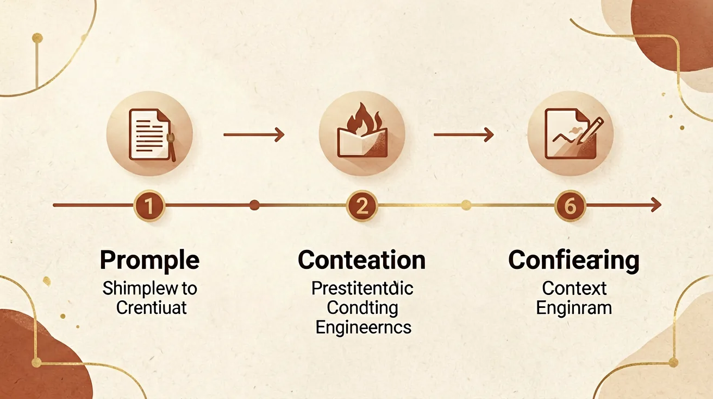
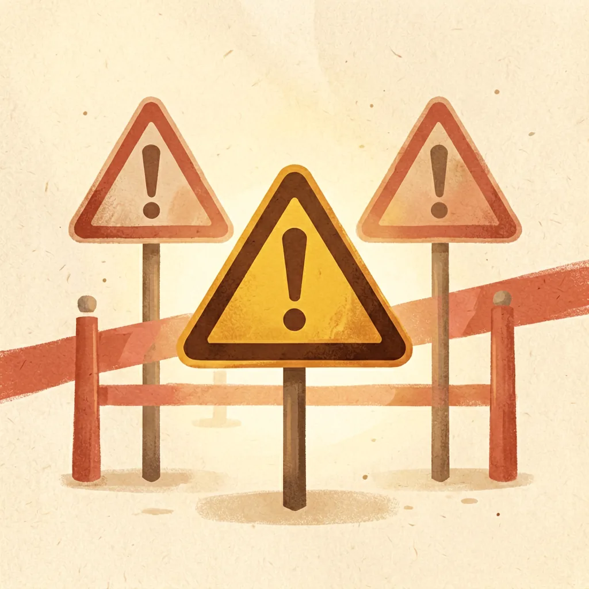

核心一句话
上下文工程就像给医生准备病历。
你不能只对医生说"请准确判断我怎么了"——这句话目标明确，却缺少诊断所需的信息。
重点不是把要求说得更有气势，而是让对方在判断之前，拿到相关、准确、足够的信息。
你不能只对医生说"请准确判断我怎么了"——这句话目标明确，却缺少诊断所需的信息。
重点不是把要求说得更有气势，而是让对方在判断之前，拿到相关、准确、足够的信息。
好答案不只取决于你问了什么，
更取决于回答者在开口之前，究竟看见了什么。

从"写好一句提示词"到"为AI组织完整的信息环境"

大语言模型刚普及时，人们主要研究怎样写出更有效的提示词。但随着AI开始处理编程、资料分析、智能客服和复杂工作流，大家发现：
只优化一条指令，已经不够了。
真正影响结果的，还有AI能看到哪些资料、能调用哪些工具、是否保留之前的对话、有没有相关示例、哪些内容应该优先参考……
一个关注"怎么说"，一个关注"看到什么"
关注：任务怎么描述、要求怎么表达、输出格式怎么规定
解决：我应该怎样把任务讲清楚？
关注：AI应该看到哪些资料、从哪里获取、哪些需要保留、哪些应该删除
解决：AI在执行任务前，应该掌握什么？
强调态度，不补充信息
"你是一名资深程序员，请认真分析，全面思考，确保代码绝对正确。帮我修复这个程序。"
程序代码是什么、出现什么错误、使用哪种语言、正确结果应该是什么、项目有哪些限制
不只是写得更详细，而是让AI得到完成任务需要的上下文
这是最容易误解的地方
我以前会把整份文档、全部聊天记录和所有参考资料一起丢给AI，以为材料越多，答案越准确。结果反而更差。
因为上下文中可能混入：与当前任务无关的内容、相互矛盾的规定、已经过时的文档、重复出现的信息……
就像考试前把整座图书馆搬到桌上。
面对稍微复杂的任务，先检查六类内容
这次到底要完成什么？
AI需要了解哪些前置信息？
完成任务必须参考什么？
哪些要求必须遵守？
之前已经做过什么决定？
怎样判断结果可以使用？
在真实AI应用中，上下文还可能由系统自动准备
上下文工程很重要，但不能解决所有问题

如果知识库中的资料本身错误，组织得再好，也可能得到错误结论。
当两份资料说法不同，需要先规定优先级，而不是全部交给AI自行选择。
即使没有超过容量，过多的无关内容也可能降低重点信息的影响力。
医疗、法律、财务和安全等场景，资料齐全也不代表结果一定正确。
密码、证件号码、个人健康资料、未公开代码，都需要谨慎处理。
上下文可以提供知识，但不能无限提升模型的推理能力。